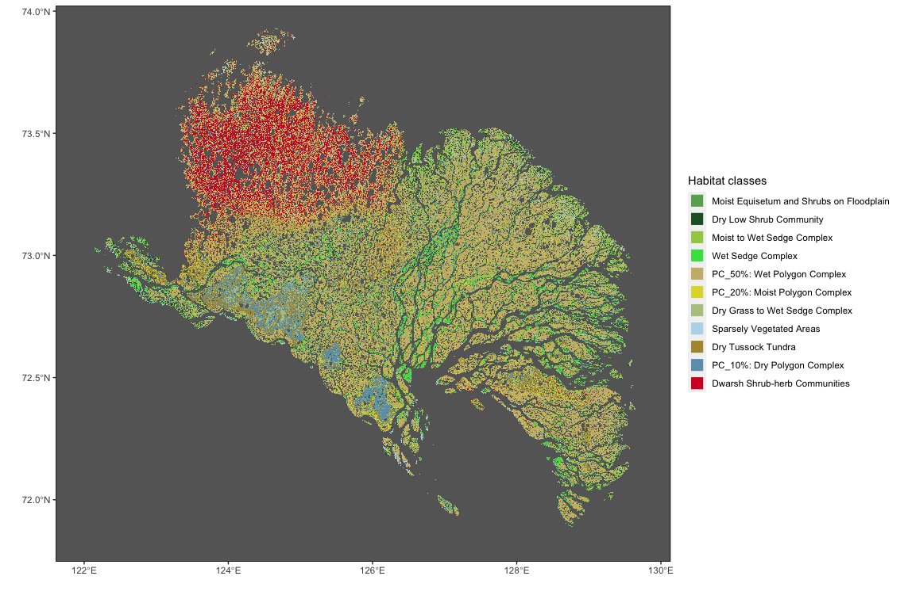
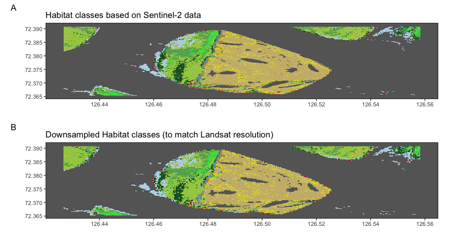

Methods, training, etc.: Google Earth Engine
Visualisation: Google Earth Engine
library(stars)
library(raster)
library(tidyverse)
library(sf)
sf::sf_use_s2(FALSE)load("data/tmp/roi.rda")
classesR <- read_stars("data/Landsat_classes_index.tif") %>%
setNames("Habitat") %>% st_set_dimensions(names = c("x", "y", "band")) %>% st_as_stars()
classCol <- c('#68ab5f', '#1c5f2c', '#a3cc51', '#43DF4F', '#ccb879',
'#dcd939', '#b5c58f', '#b8d9eb', '#af963c', '#6c9fb8',
'#d2042d', 'transparent', 'transparent')
classNms <- c('Moist Equisetum and Shrubs on Floodplain',
'Dry Low Shrub Community',
'Moist to Wet Sedge Complex',
'Wet Sedge Complex',
'PC_50%: Wet Polygon Complex',
'PC_20%: Moist Polygon Complex',
'Dry Grass to Wet Sedge Complex',
'Sparsely Vegetated Areas',
'Dry Tussock Tundra',
'PC_10%: Dry Polygon Complex',
'Dwarsh Shrub-herb Communities')
ggplot(roi) +
geom_sf(fill = "transparent", color = "transparent") +
geom_stars(data = classesR[,,,1], downsample = c(11,11), show.legend = FALSE) +
scale_fill_gradientn(colors = classCol, breaks = 0:12, na.value = "transparent") +
geom_point(data.frame(x = 0:10, y = rep(0, 11), cl = as.factor(0:10)), mapping = aes(x, y, col = cl[1:11])) +
scale_color_manual(name = "Habitat classes", values = classCol[1:11], labels = classNms,
guide = guide_legend(override.aes = list(size = 5, shape = 15))) +
labs(x = "", y = "") +
theme(
panel.grid.major = element_blank(), panel.grid.minor = element_blank(),
panel.background = element_rect(fill = "grey40",
colour = "grey40"),
panel.border = element_rect(colour = "black", fill = "transparent"),
panel.grid = element_line(size = 0.08)
) +
coord_sf(
xlim = c(st_bbox(roi)["xmin"]+0.25, st_bbox(roi)["xmax"]+0.1),
ylim = c(st_bbox(roi)["ymin"], st_bbox(roi)["ymax"]-0.1)
)
sam <- st_as_sfc(st_bbox(c(xmin = 126.426729, xmax = 126.558288, ymin = 72.365327, ymax = 72.390865)), crs = 4326)
lands <- classesR[roi %>% st_intersection(sam %>% st_set_crs(st_crs(classesR))),]
## sentinel
sent <- read_stars("data/Sentinel_classes_mosaic.tif", proxy = TRUE)
sent <- sent[sam %>% st_set_crs(st_crs(sent)),] %>% st_as_stars()
sP <- ggplot(sam) +
geom_sf(fill = "transparent", color = "transparent") +
geom_stars(data = sent, show.legend = FALSE) +
scale_fill_gradientn(colors = classCol, breaks = 0:12, na.value = "transparent") +
scale_color_manual(values = classCol[1:11]) +
labs(x = "", y = "",
title = "Habitat classes based on Sentinel-2 data",
tag = "A") +
theme(
panel.grid.major = element_blank(), panel.grid.minor = element_blank(),
panel.background = element_rect(fill = "grey40",
colour = "grey40"),
panel.border = element_rect(colour = "black", fill = "transparent"),
panel.grid = element_line(size = 0.08)
) +
coord_sf(
xlim = c(st_bbox(sam)["xmin"], st_bbox(sam)["xmax"]),
ylim = c(st_bbox(sam)["ymin"], st_bbox(sam)["ymax"])
)
lP <- ggplot(sam) +
geom_sf(fill = "transparent", color = "transparent") +
geom_stars(data = lands[,,,1], show.legend = FALSE) +
scale_fill_gradientn(colors = classCol, breaks = 0:12, na.value = "transparent") +
scale_color_manual(values = classCol[1:11]) +
labs(x = "", y = "",
title = "Downsampled Habitat classes (to match Landsat resolution)",
tag = "B") +
theme(
panel.grid.major = element_blank(), panel.grid.minor = element_blank(),
panel.background = element_rect(fill = "grey40",
colour = "grey40"),
panel.border = element_rect(colour = "black", fill = "transparent"),
panel.grid = element_line(size = 0.08)
) +
coord_sf(
xlim = c(st_bbox(sam)["xmin"], st_bbox(sam)["xmax"]),
ylim = c(st_bbox(sam)["ymin"], st_bbox(sam)["ymax"])
)
gridExtra::grid.arrange(sP, lP, nrow = 2)